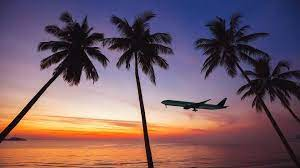

Зачем вообще путешествовать?
Зачем тратить деньги на путешествия, когда можно купить автомобиль или что-нибудь равноценное?
Что путешествия дают человеку?

Причин путешествовать великое множество – страсть к путешествиям, любовь к культуре,
желание просто оставить это все позади, желание забыть, или потребность в новых знакомствах.
Путешествия становятся для людей способом справляться с различными ситуациями, переживать новый опыт,
найти себя. Вот почему люди любят путешествовать.
Когда меня спрашивают, почему мне так хочется путешествовать, я рассказываю о том, как я живу дома и могу распланировать свою жизнь на месяцы вперед. Спросите, почему? Потому что все дни похожи друг на друга – пробки, работа, спортзал, сон, повторить. В то время, когда в путешествии каждый момент обещает новое начало. Ни один день не похож на предыдущий. Ты не можешь спланировать заранее, что с тобой сегодня произойдет, потому что это попросту невозможно. Ни пробок, ни поручений, никаких деловых встреч. Только ты и твоя прихоть. Путешествия дают свободу. Вот почему люди путешествуют.
а последние несколько лет моя жизнь постоянно менялась. Места, культуры, города, страны все непохожие друг на друга. Ни один день не был похож на предыдущий. В действительности, каждый день настолько отличается от других, что мне порой кажется, что я прожит уже 3 жизни вместо одной, настолько насыщенны мои дни. Ваша жизнь покажется вам длиннее - вот зачем нужны путешествия.
Я живу своей жизнью путешественника и не знаю, что ждет меня впереди, но могу прочесть лишь один указатель, на котором написано «Перемены впереди» - и мне ничего не остается, как улыбаться. Оглядываясь на других путешественников, я вижу, что и они улыбаются. Мы улыбаемся все вместе, зная, что новый опыт нас ждет уже за поворотом – неожиданное приключение, полезный опыт, дерзкий вызов, верный друг или любовь всей жизни.

Когда я был во Вьетнаме, я перекинулся парой слов с двумя британцами, эта беседа закончилась тем, что мы поехали на MekongDelta вместе. И это все потому, что я просто сказал «привет», когда приехал в свой гестхаус. Зато по возвращению домой излишняя закрытость окружающих людей – была одной из сложнейших для меня вещей. В их взгляде так и читалось: «Почему он такой дружелюбный? Где здесь подвох?». Многих попросту вводил в ступор тот факт, что, спросив: «Как дела?», я действительно хочу узнать историю жизни этого человека, а не услышать вежливое: «Нормально».